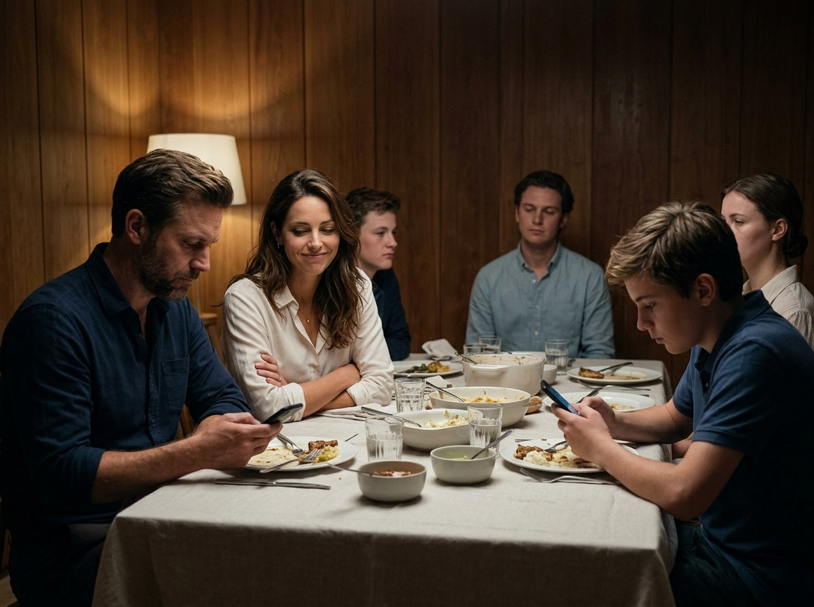
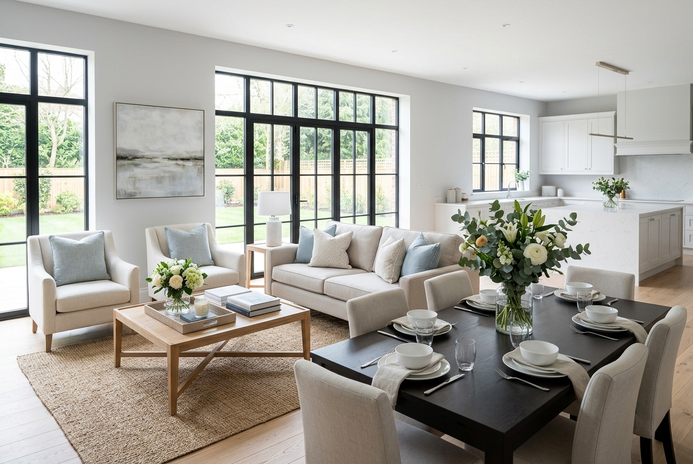

MSc Thesis Defense · University of Twente · Industrial Engineering & Management
Predicting post-merger operating performance.
A target-family, interpretable machine-learning study of where pre-deal information is most useful after M&A, and where it is not.
Author
Y. AnnemaStudent no. 2424746
Supervisors
R.A.M.G. Joosten · B. RoordaUniversity of Twente
External
B. JanssenMoore MKW Corporate Finance
Y. Annema · UT IEM · 2026Thesis defense
01 · The promise
M&A is sold on a simple piece of arithmetic.
1+1>2?
The extra value is called synergy: lower costs · new revenue · better asset use · cheaper financing
Y. Annema · UT IEMThe synergy promise · 02
01 · The catch
Synergy is easy to promise, and hard to observe.
Deal day · on paper
A signature and a price.
Valuation models and synergy estimates
Announced cost savings and revenue plans
Everything is documented and visible
The years after · in reality
Two organizations grow together, or they don't.
IT systems that must merge
Key people who stay, or leave
Management chemistry, routines, customers
Most of what decides success happens after the deal. None of it is written down before the deal.
Y. Annema · UT IEMPromise vs. reality · 03
01 · The research question
Not "can we predict merger success?" That question is unanswerable with pre-deal data.
The question this thesis asks
How much of the post-merger outcome is already visible in the information that exists before the deal closes, and which part is not?
Y. Annema · UT IEMBounded question · 04
Synergy Dating App
Tap to open
01 · An analogy
An app can compare two profiles and make an educated guess.
Emma29
Utrecht · 4 km away
"Runs a busy household. Looking for something serious."
yogatravelcookingearly riser
In the thesis: the acquirer's annual report · FY−1
It's a match?
Daan31
Amersfoort · 7 km away
"Loves what he does, open to a bigger adventure."
cyclingfootballconcertsfoodie
In the thesis: the target's annual report · FY−1
The app sees public information only: age, location, interests, what both say they want. The model sees the same kind of thing: two sets of pre-deal financials.
Y. Annema · UT IEMTwo profiles · 05
01 · The boundary
No app can see the first Christmas dinner.
All the app sees two pre-deal profiles
?
Three possible dinners it cannot see any of them
Warm and easy

Polite but distantIt blows up
Same two profiles, three very different dinners, yet the pre-deal data can't tell you which. That dinner is post-deal integration: systems, key people, management chemistry. Everything today lives on one side of that line.
Y. Annema · UT IEMThe integration blind spot · 06
01 · Today's route
On purpose, not the whole thesis. Two findings and one takeaway.
Finding 1 · Which, not whether
A closer look at the five outcomes the model tries to predict.
A report card of five outcomes, not a single grade
Finding 2 · The honest boundary
An honest look at the limits of what it can claim.
The staged house · the line I will not cross
Takeaway · For the advisor
A compass, not a crystal ball: inspectable pre-deal signals with explicit limits.
The full evidence lives in the thesis · appendix slides ready for the Q&A
Y. Annema · UT IEMToday's route · 07
Part II
Data & design.
Listed-firm M&A · pre-deal features only · three-year post-deal outcomes · validation that respects time.
Y. Annema · UT IEMData & design · 08
02 · Sample
From 30,912 raw deals to 4,229 measurable ones.
Raw LSEG universe
All deals
30,912
Outcome label fully constructible
ML-ready
4,229
Why deals drop out: the outcome label must be complete
Pre-deal financialscash flow + assets · both firms · year t
Industry benchmarkSIC-year median at t and t+3 · fails most often
missing → deal excluded
ML-ready · 4,229
Label yield 13.7%1995–2022
Missing features never drop a deal, the model handles those gaps natively. A missing label ingredient always does. Stated upfront: the evidence covers large, listed, well documented deals. Not the full M&A universe, and not private SMEs.
Y. Annema · UT IEMSample construction · 09
02 · Target family
One grade is not a report card.
Instead of one number, the model is evaluated against five post-deal synergy proxies, each measured as the change three years after the deal.
One grade
Healy CFROA
Anchor benchmark
Anchor
one of five
Deal closet+3 outcome
Synergy Proxy Report Card
Five post-deal outcomes the model is judged on
Target family
ProxyWhat it capturesMeasureRole
Healy CFROA
inspired byHealy et al. (1992)
Cash-flow efficiency
CFO/assets
Anchor
Asset turnover
inspired byGhosh (2001)
Asset productivity
revenue/assets
Headline
Operating ROA
inspired byKing et al. (2004)
Profitability
EBIT/assets
Diagnostic
Operating margin
inspired byKing et al. (2004)
Margin discipline
EBIT/sales
Diagnostic
CAPEX intensity
inspired byDevos et al. (2009)
Investment behaviour
capex/assets
Diagnostic
Diagnostics
Target variable = what the model tries to predict
Y. Annema · UT IEMTarget family · 10
02 · Model
A signal detector, not a crystal ball.
Acquirer · FY−1
Target · FY−1
Two annual reports · public data only, nothing post-deal
29 features, engineered from both reports · clustered into 5 channels
MLXGBoost learns patterns
Frozen settings · no peeking
Predictions for all five targetsper deal · t+3 change
Which outcome is learnableranked across targets, not by R² scale
SHAP attributionwhat the model relied on
It tests whether visible information carries signal. It does not claim to know how the integration will go.
Y. Annema · UT IEMPipeline · 11
02 · Validation
The model never reads tomorrow's newspaper.
Train1995 – 2015
Validate2016 – 18
Test · held out2019 – 2022
knowledge cutoff · end 2018
No future data, ever
Older deals teach the model · intermediate deals tune it · the final cohort grades it once. Random shuffling would inflate every number on the next slides, and make them meaningless.
Every prediction uses only information that genuinely existed before the deal.
Y. Annema · UT IEMChronological validation · 12
Part III
Main results.
The central finding is heterogeneity: classic synergy is hard, asset productivity is learnable, and the interpretation must stay bounded.
Y. Annema · UT IEMResults · 13
03 · How to read the numbers
Two rulers, two different questions.
Spearman ρ · rank order
Can the model put deals in the right order?
−9%
−5%
−2%
+1%
+4%
+7%
+11%
worse outcomesbetter outcomes
Seven unseen deals land scattered. The model sorts them onto one line, likely better outcomes to the right. A screening tool needs exactly this: the order, not the exact numbers.
Out-of-sample R² · point accuracy
Can the model predict the actual size?
Deal 1
Deal 2
Deal 3
Deal 4
Deal 5
Actual outcomeModel prediction
A much harder test: match the height of every bar, not just the order. Negative R² means worse than guessing the average. Illustrative deals.
Warning kept from the thesis: targets live on different scales. R² values are per-target learnability indicators, never cross-target improvement percentages.
Y. Annema · UT IEMTwo rulers · 14
03 · RQ1 · Central result
Predictability is not one number. It differs sharply across targets.
Held-out 2019–2022 test cohort · stems show Spearman ρ · labels show ρ and R²
Y. Annema · UT IEMTarget-family results · 15
03 · RQ1 · Headline
The signal concentrates in asset productivity: revenue per unit of assets.
0.117
Out-of-sample R²
0.276
Spearman ρ
Asset-turnover change · t+3n = 597 held-out deals
Healy CFROA stays relevant as the anchor (R² 0.022 · ρ 0.161): a faint but positive ordering signal. The contribution is showing that target definition changes what is learnable.
Y. Annema · UT IEMHeadline finding · 16
03 · The boundary that matters most
Part of the signal is statistical gravity, not synergy.
Like a house staged for sale: polished for the viewing, back to normal once you live in it

Staged for the sale. The numbers are polished for the viewing, presented at their very best.
No room above a 10/10. From the top, the only likely move is back toward normal, not further up.
The classic mean-reversion critique of the Healy measure (Ghosh, 2001).
Full asset-turnover modelR²
0.117
Same model, pre-deal level features removedR²
0.025
Most of the signal is the model detecting this gravity. Residual signal remains, so the claim shrinks; it does not vanish.
Industry: only chemicals positive within large binsTest window contains COVID + surge
Y. Annema · UT IEMMean-reversion boundary · 17
03 · The line I will not cross
Asset-turnover predictability is not evidence of stronger synergy forecasting.
It is evidence that some post-merger operating adjustments, asset-productivity drift above all, are learnable in advance. Useful, but a different and more modest claim.
Y. Annema · UT IEMBounded claim · 18
Part IV
Inside the model.
Opening the black box just far enough to see what the prediction leans on, and what it can never see.
Y. Annema · UT IEMAttribution · 19
04 · SHAP intuition
If the model predicts 2–1, SHAP splits the credit across the players.
Each player gets their average contribution across all possible line-ups. That is the Shapley idea.
In the thesis
The players are the 29 features. The predicted score is the predicted post-merger outcome.
The boundary
SHAP explains the prediction, not the real match. What the model relied on, never what caused the outcome in the world.
Y. Annema · UT IEMSHAP intuition · 20
04 · Where the model looks
Attribution concentrates in operational and financial structure.
Operational34.2%
Financial30.9%
Cost20.3%
Revenue9.7%
Macro4.8%
Baseline Healy model · shares of mean absolute SHAP attribution
Asset-turnover model
Mean-reversion-risk features alone receive about 29.8% of total attribution. The SHAP view of the statistical gravity from the previous slide.
Pre-deal accounting reads structure well. It is blind to the dinner table.
Y. Annema · UT IEMChannel attribution · 21
04 · Tested further in the thesis
Stress-tested three more ways. The finding holds, and stays bounded.
Each gets a full chapter-level treatment in the thesis. Today: one quick summary slide. The full appendix slides are ready, so ask me anything in the Q&A.
Y. Annema · UT IEMTested further · 22
04 · The three extensions, at a glance
Each adds nuance. None changes the story.
1 · Distress ratios
Extra financial-health diagnostics.
Pompe–Bilderbeek panel next to Altman Z.
Distress ratios
1 · Distress ratios · appendix A2
More diagnostics, not a new engine.
The full ratio panel adds detail, but the gain remains modest. R² 0.030 · ρ 0.197Distress: 53–55% of attribution
Altman Z · one compact score
The blood-pressure check: many problems, one needle.
Pompe–Bilderbeek · the full blood panel
1.8
current ratio
1.1
quick ratio
0.34
working capital
12%
cash flow / debt
0.61
leverage
2.1×
interest cover
8.4%
return on assets
3.1%
net margin
1.4×
asset turnover
41 d
receivables days
−2%
sales growth
0.18
cash / assets
Result lift from the richer panel
R²0.022 → 0.030
rank ρ0.161 → 0.197
The model improves, but only a little: better diagnostics, same bounded story.
2 · Culture
Country-level distance proxies.
Hofstede dimensions between acquirer and target countries.
Culture
2 · Culture · appendix A3–A4
Weak proxies, reported as weak.
Country scores are not firm culture; integration happens between firms, not flags. Weak for CFROA · mixed for asset turnover
Distance on the map ≠ distance in culture
Hofstede · Australia vs Germany
Power distance38 · 35
Individualism73 · 79
Achievement61 · 66
Uncertainty avoid.51 · 65
Long-term orient.56 · 57
Indulgence71 · 40
AustraliaGermany
Nearly identical country scores, and that is the problem: the score sees the flag, never the firm.
3 · Time robustness
Rolling tests across time.
Learn from the past, judge on unseen years, roll forward.
Time robustness
3 · Time robustness · appendix A5–A6
Partial persistence, nothing more.
A predictor is useful only if it keeps working over time. Rolling the test window forward, the ranking signal stays positive, but weak.
The ideal forecast
Useful tomorrow, not just today.
Today23°
Thu26°
Fri25°
Sat24°
Sun23°
Trusted because it keeps working tomorrow.
The reality · rolling test windows
Positive in every window; strength varies.
Robust enough to survive the check. Too weak to oversell.
The finding survives the checks, but every extension keeps its boundary. full detail in appendix A2–A6
Y. Annema · UT IEMExtensions at a glance · 23
Part V
From listed firms to SMEs.
The thesis was written with an SME advisory firm. Does any of this transfer to private, mid-market deals?
Y. Annema · UT IEMSME feasibility · 24
05 · From listed deals to SMEs
Computability is not validation.
Listed-firm training source
LSEG M&A Screener
Listed-firm deals
Pre-deal inputs · 3-year outcome
Not private SME deals
Usable for training the listed-firm model.
audit SME inputs
Can the SME inputs be computed?
ORBIS · Western European SMEs
Asset-turnover inputs99.4%
EBIT / assets inputs96.2%
No deal link
No 3-year outcome label
Inputs mostly exist. Labels do not.
label missing
The missing validation target
No labelled SME outcome
No observed 3-year change
No train target
No test set
Feasibility map
not a validated SME model.
SME inputs are largely computable. But without a labelled SME outcome, there is no validation.
Y. Annema · UT IEMData sourcing · 25
05 · The practitioner layer
A compass, not a crystal ball.
What the dashboard shows
Target-family indicators per deal · Shapley-style attribution · the SME feasibility boundary. The thesis logic, inspectable live.
What a compass does
Tells you which direction you are facing. It does not walk the route, and it does not promise the terrain is safe.
Required warning
Decision-support indicators only, not an empirically validated SME prediction model.
Y. Annema · UT IEMDashboard · 26
06 · Where the limit lives
The profiles still cannot see what decides the deal.
Emma
Daan
Dossier · post-deal integration█ Redacted
Invisible in any annual report
What actually shapes synergy
The combined entity anticipates operationaland cost synergies across
Office politics on both sides
Management remains confident thatwill be achieved within the
How the negotiations went, and what they left behind
Organisational alignment and headcountas set out in
Management skill and confidence
The transaction is expected to be accretivebefore
Who stays after the deal, and who quietly leaves
Forward-looking statements regarding realised value are
Integration speed and execution quality
Further detail is set out in the accompanying
Hard pre-deal data sees none of this. That is exactly why the claim stays bounded.
Y. Annema · UT IEMBack to the profiles · 27
Close
Thank you.
Finding 1 · Which, not whether
Asset productivity is learnable. Classic synergy is not.
Finding 2 · The honest boundary
Asset productivity is mostly mean reversion. Classic synergy stays weak.
Takeaway · For the advisor
A compass, not a crystal ball. Direction, not the route.
Before the deal, the profiles contain real information. The synergy is built after it.
Y. Annema · UT IEM · 2026Questions · 28
Appendix
For the Q&A.
The full depth is on call — jump straight to any topic:
Whose applause is it? The Beatles, and the manager's playbook.
The fair way · Shapley
Measure the applause as each member walks on stage.
+30JJohn
+25PPaul
+15GGeorge
+10RRingo
Applausemarginal contribution per entry
J → P → G → R · one of 4! = 24 orders29 features: 10+ billion orders
Ringo's applause depends on who is already on stage. A fair share averages his marginal applause over every possible entry order. With 29 band members, trying them all is hopeless.
The playbook is my gradient-boosting model. The members are the 29 features. The applause is the predicted post-merger outcome. Tonight's audience is the specific deal being explained.
Y. Annema · UT IEMTreeSHAP · A1
Appendix · Why transfer is not copy-paste
A restaurant recipe doesn't scale down to a home stove one-to-one.
The same number changes meaning when the setting changes. Take one line on the balance sheet, cash:
Large listed firm
Idle cash can be a warning sign.
Managers with too much money, too few good ideas
Agency risk · empire-building
Family-owned SME
The same cash is the emergency fund.
Keeps the integration alive when surprise costs appear
Financing constraints, not agency slack
Size, ownership, and financing constraints re-tune what every variable means.
Y. Annema · UT IEMTranslation limits · A2
Appendix · Boundaries
What I do not claim, and why that matters.
No causal SHAP interpretation. Attribution, never mechanism.
No asset-turnover-as-synergy claim. Drift is not value creation.
No cross-target R² improvement comparisons. The scales differ.
No firm-level culture facts from national survey scores.
No full temporal robustness from rolling windows.
No SME validation without labelled SME outcomes.
Each of these would have made the thesis sound more impressive. Each would also have been wrong.
Y. Annema · UT IEMNon-claims · A3
Appendix · Contribution
Three contributions, each load-bearing on its own.
Methodological
A chronological, leak-free, target-family ML design.
For post-merger operating performance, reusable beyond this thesis.
Empirical
Predictability is target-dependent.
Asset-productivity drift is more learnable than CFROA-style synergy, with the mean-reversion boundary named instead of hidden.
Practical
An interpretable, feasibility-gated advisory framework.
The compass: inspectable pre-deal signals with explicit limits.